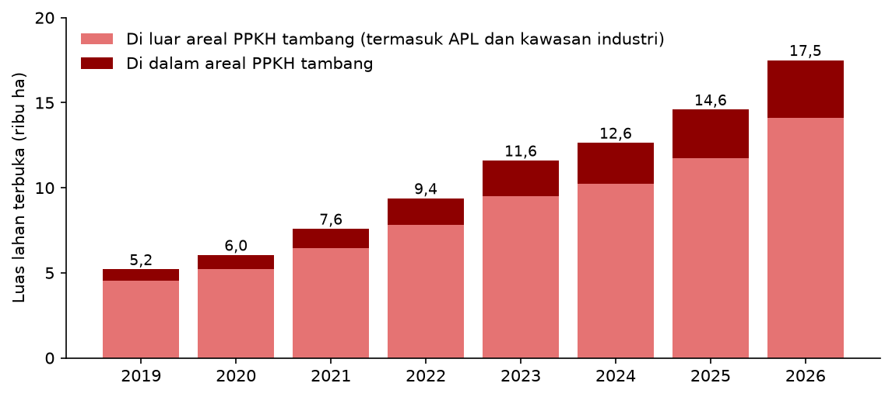
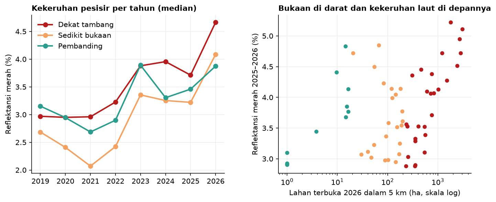

Perluasan Tambang Nikel di Morowali dan Dampaknya, 2019–2026
Project ini adalah lanjutan dari kajian Kerusakan Lingkungan akibat Penambangan Nikel di Kabupaten Morowali (September 2023), yang menimbang manfaat dan kerusakan tambang nikel berdasarkan studi literatur.
Latar belakang
Pada 2023, kajian sebelumnya menyimpulkan bahwa kerusakan akibat tambang nikel di Morowali menyebar ke hampir semua unsur lingkungan, mulai dari bentang lahan, hutan, sungai, sampai laut. Kesimpulan itu disusun dari jurnal dan berita, sedangkan bukaan tambangnya dipetakan dengan digitasi manual dari Google Earth. Cara ini cukup untuk memberi gambaran, tetapi belum bisa menjawab pertanyaan yang lebih terukur. Seberapa cepat sebenarnya tambang bertambah luas? Berapa banyak hutan yang hilang? Dan apakah perubahan itu terjadi di dalam areal yang memang sudah diizinkan?
Tiga tahun kemudian, pertanyaan-pertanyaan itu dijawab langsung dari citra satelit. Project ini memetakan bukaan lahan di Kabupaten Morowali setiap tahun dari 2019 sampai 2026, lalu mencocokkannya dengan data hutan, fungsi kawasan hutan, dan persetujuan penggunaan kawasan hutan untuk tambang.
Data yang digunakan
| Data | Format Data | Jenis Data | Sumber |
|---|---|---|---|
| Citra Sentinel-2 Level-2A (10–20 m), Januari 2019–Oktober 2026 | Raster | Sekunder | ESA Copernicus, melalui Google Earth Engine |
| Penyaring awan Cloud Score+ | Raster | Sekunder | |
| Segmen pesisir 5 km dan reflektansi kanal merah perairan, 2019–2026 | Vektor dan tabel | Turunan | Diolah dari Sentinel-2 |
| Tutupan pohon 2000 dan kehilangan tutupan pohon 2019–2025 | Raster | Sekunder | Hansen / University of Maryland |
| Persetujuan Penggunaan Kawasan Hutan (PPKH), Januari 2026 | Vektor | Sekunder | Geoportal Kementerian Kehutanan |
| Kawasan hutan (revisi I, Juni 2026) | Vektor | Sekunder | Geoportal Kementerian Kehutanan |
| Batas Kabupaten Morowali | Vektor | Sekunder | geoBoundaries (ADM2) |
Metode
Morowali hampir selalu berawan, sehingga satu citra saja jarang bisa memperlihatkan seluruh wilayah. Karena itu, semua citra Sentinel-2 dalam satu tahun digabung menjadi satu komposit, setelah bagian yang tertutup awan dibuang dengan Cloud Score+. Pada komposit ini, sebuah piksel dianggap lahan terbuka jika vegetasinya sangat rendah (NDVI < 0,25), bukan air (MNDWI < 0), dan menunjukkan ciri tanah terbuka (indeks tanah terbuka BSI > 0). Bukaan tambang nikel di Morowali berupa tanah laterit berwarna merah kecokelatan, sehingga mudah dibedakan dari hutan di sekitarnya.
Agar tidak terkecoh oleh lahan yang terbuka sesaat, misalnya karena longsor kecil atau sisa awan, sebuah piksel baru dihitung sebagai bukaan pada tahun tertentu jika lahan itu tetap terbuka pada tahun berikutnya. Bukaan yang terjadi setelah 2019 lalu dicocokkan dengan tutupan hutan 2019, fungsi kawasan hutan, dan areal PPKH tambang.
Hasil
Pada 2019, luas lahan terbuka di Kabupaten Morowali sekitar 5.201 hektare. Pada 2026, luasnya menjadi 17.499 hektare, atau 3,4 kali lipat dalam tujuh tahun. Pertambahannya terjadi setiap tahun tanpa jeda, dengan rata-rata sekitar 1.750 hektare lahan baru dibuka per tahun. Lonjakan terbesar terjadi pada 2022–2023 dan 2025–2026, masing-masing lebih dari 2.000 hektare dalam setahun.

Peta di bawah memperlihatkan kapan setiap bagian lahan mulai dibuka. Warna kuning menunjukkan lahan yang sudah terbuka sejak 2019, sedangkan warna merah tua menunjukkan bukaan terbaru. Geser penanda waktu untuk melihat bagaimana bukaan menyebar dari tahun ke tahun, atau ganti citra latar untuk membandingkan kondisi 2019 dan 2026.
Klik sebuah areal PPKH untuk melihat nama dan luasnya. Aktifkan lapisan "Perubahan kekeruhan pesisir" di panel kanan atas untuk melihat segmen pantai. Bukaan di luar garis putus-putus batas Kabupaten Morowali, misalnya tambang di Sulawesi Tenggara di sebelah selatan, tidak ikut dianalisis. Setelah peta diklik, gulir untuk memperbesar atau memperkecil.
Bukaan berawal dari sekitar kawasan industri di pesisir Bahodopi, lalu terus bergerak ke arah pedalaman dan ke selatan. Pola ini terlihat jelas pada citra 2026, di mana bukaan tambang membentuk jalur-jalur panjang mengikuti jalan tambang yang menembus hutan di perbukitan. Dari 12.302 hektare lahan yang baru dibuka sejak 2019, sekitar 5.180 hektare atau 42% sebelumnya masih berupa hutan.
Di dalam atau di luar areal yang diizinkan?
Kegiatan tambang di dalam kawasan hutan wajib memiliki Persetujuan Penggunaan Kawasan Hutan (PPKH), sedangkan tambang di Areal Penggunaan Lain (APL) tidak memerlukannya. Karena itu, bukaan baru dipisahkan menurut fungsi kawasan hutan dan areal PPKH.
| Lokasi bukaan baru (2020–2026) | Luas (ha) | Sebelumnya hutan (ha) |
|---|---|---|
| Areal Penggunaan Lain | 6.519 | 2.284 |
| Kawasan hutan, di dalam areal PPKH | 2.767 | 1.597 |
| Kawasan hutan, di luar areal PPKH | 2.859 | 1.310 |
| Hutan produksi konversi | 1.442 | 572 |
| Hutan produksi terbatas | 1.349 | 698 |
| Hutan produksi tetap | 52 | 37 |
| Hutan lindung | 16 | 3 |
| Tidak terpetakan dalam peta kawasan hutan | 157 | 2 |
PPKH yang dipakai adalah data Januari 2026 untuk kegiatan tambang dan eksplorasi. Hutan pada 2019 didefinisikan sebagai tutupan pohon ≥ 30% yang belum hilang sebelum 2019 menurut Hansen/UMD.
Sekitar separuh bukaan baru berada di APL, sehingga tidak memerlukan PPKH. Separuh lainnya berada di kawasan hutan, dan dari bagian ini, hanya sekitar 49% yang tumpang tindih dengan areal PPKH. Sisanya, sekitar 2.859 hektare, berada di kawasan hutan tetapi di luar areal PPKH yang tercatat, termasuk 16 hektare di hutan lindung.
Angka ini belum tentu berarti pelanggaran, karena ada beberapa kemungkinan lain, misalnya persetujuan yang terbit setelah Januari 2026, kawasan hutan produksi konversi yang sudah dilepaskan tetapi belum tercermin di peta, pergeseran batas karena peta kawasan hutan berskala 1:250.000, atau bukaan yang bukan tambang, seperti jalan dan permukiman. Namun angka ini menunjukkan di mana pengawasan perlu difokuskan, terutama pada hampir 2.800 hektare bukaan di hutan produksi terbatas dan hutan produksi konversi.
Apakah laut di depannya ikut keruh?
Kajian 2023 menyebut limbah tambang terbawa ke pantai dan merusak terumbu karang. Dari satelit, hal ini bisa didekati dengan melihat warna air laut. Air yang membawa lumpur dan tanah memantulkan lebih banyak cahaya merah, sehingga reflektansi kanal merah Sentinel-2 bisa dipakai sebagai petunjuk kekeruhan. Garis pantai Morowali dibagi menjadi segmen sepanjang 5 km, lalu kekeruhan dihitung di jalur laut 0,3–1,5 km dari pantai pada setiap citra yang bebas awan sejak 2019. Setiap segmen dikelompokkan menurut luas lahan terbuka di darat dalam radius 5 km, yaitu dekat tambang (≥ 200 ha), sedikit bukaan (20–200 ha), dan pembanding (< 20 ha).

Kekeruhan memang naik di semua kelompok sejak 2019, termasuk di pantai pembanding yang hampir tidak memiliki bukaan, sehingga sebagian kenaikan kemungkinan dipengaruhi faktor yang lebih luas seperti curah hujan. Namun kenaikan di pantai dekat tambang jauh lebih besar, sekitar 43%, hampir dua kali lipat kenaikan di pantai pembanding yang sekitar 25%. Pada 2026, pantai dekat tambang juga menjadi yang paling keruh di antara ketiga kelompok.
Hubungan ini terlihat lebih jelas di segmen dengan bukaan terluas. Delapan segmen pantai yang di belakangnya terdapat lebih dari 1.000 hektare lahan terbuka memiliki kekeruhan sekitar 28% lebih tinggi dibanding pantai pembanding pada 2025–2026. Secara keseluruhan, semakin luas bukaan di darat, semakin keruh laut di depannya, meskipun hubungannya tergolong sedang (korelasi Spearman 0,34). Artinya, tambang bukan satu-satunya penyebab, tetapi jelas ikut menambah beban sedimen di pesisir Morowali.
Menjawab temuan kajian 2023
| Temuan kajian 2023 | Bukti dari satelit 2019–2026 |
|---|---|
| Bentang lahan berubah akibat pengupasan tanah | Lahan terbuka bertambah dari 5.201 ha menjadi 17.499 ha, sekitar 1.750 ha per tahun |
| Hilangnya habitat satwa liar | 5.180 ha hutan berubah menjadi lahan terbuka sejak 2019 |
| Limbah tambang terbawa ke pantai dan merusak ekosistem laut | Kekeruhan pantai dekat tambang naik sekitar 43% sejak 2019, hampir dua kali lipat pantai pembanding |
| Efektivitas kebijakan bergantung pada penegakan | 2.859 ha bukaan baru berada di kawasan hutan di luar areal PPKH yang tercatat |
Kesimpulan
Data satelit menguatkan kesimpulan kajian 2023 sekaligus memberinya ukuran. Tambang nikel di Morowali terus meluas setiap tahun, dari sekitar 5 ribu hektare pada 2019 menjadi hampir 17,5 ribu hektare pada 2026, dan lebih dari 40% lahan yang baru dibuka sebelumnya masih berupa hutan. Sebagian besar bukaan memang berada di APL atau di dalam areal PPKH, tetapi hampir 2.900 hektare berada di kawasan hutan di luar areal yang tercatat, sehingga perlu diverifikasi. Dampaknya juga terlihat sampai ke laut, karena pantai di depan kawasan tambang menjadi semakin keruh jauh lebih cepat dibanding pantai yang jauh dari tambang.
Metode lahan terbuka yang dipakai di sini tidak hanya menangkap lubang tambang, tetapi juga dasar sungai yang kering, jalan, dan kawasan industri. Komposit tahunan bisa terpengaruh awan yang tersisa, terutama di daerah pegunungan. Reflektansi merah hanyalah petunjuk kekeruhan, bukan pengukuran langsung kadar sedimen, dan di perairan dangkal nilainya bisa ikut dipengaruhi pasir atau terumbu di dasar laut. Data 2026 juga baru mencakup Januari sampai Oktober, dan hanya 65 dari 106 segmen pantai yang memiliki cukup citra bebas awan untuk dianalisis. Data PPKH hanya mencerminkan kondisi Januari 2026, dan izin usaha pertambangan di APL tidak tersedia secara terbuka sehingga tidak bisa dicek. Jadi, meluasnya tambang dan makin keruhnya pantai di Morowali sudah jelas terlihat dari satelit. Namun untuk memastikan apakah hampir 2.900 hektare bukaan di luar PPKH itu melanggar, hasil ini masih harus dicocokkan dengan wilayah izin usaha pertambangan, dokumen RKL-RPL perusahaan, dan citra resolusi tinggi.
← View other projects